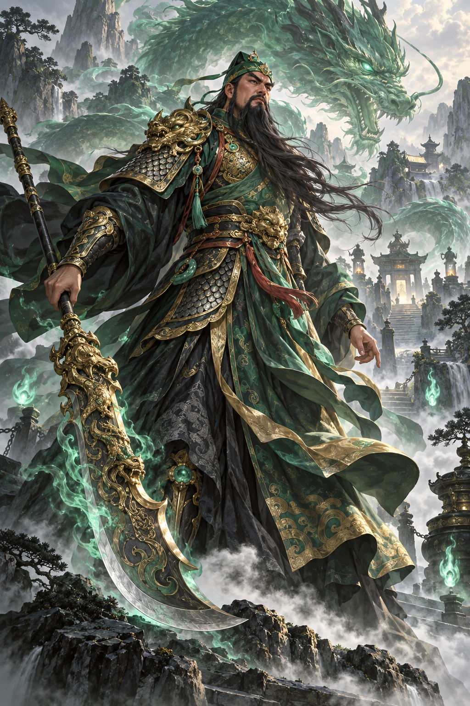
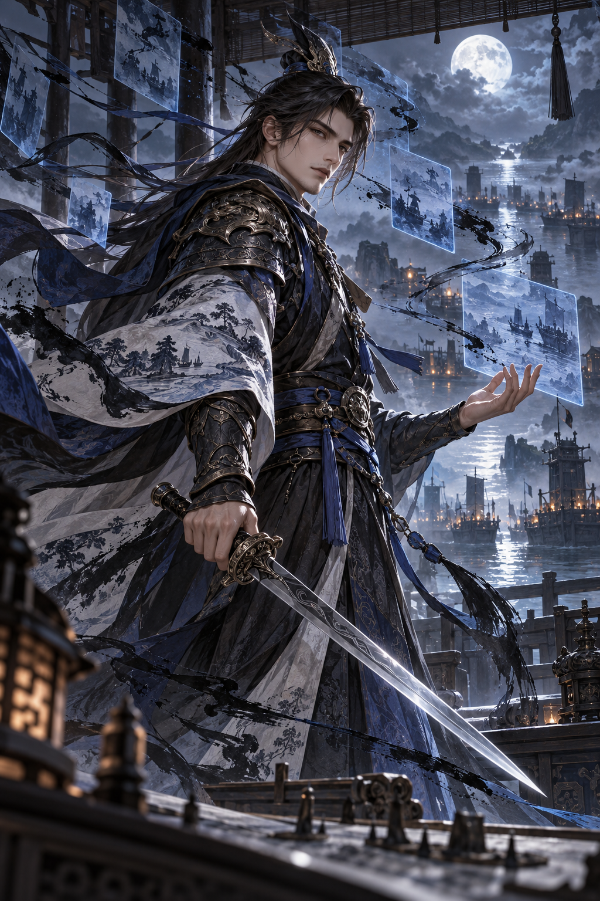
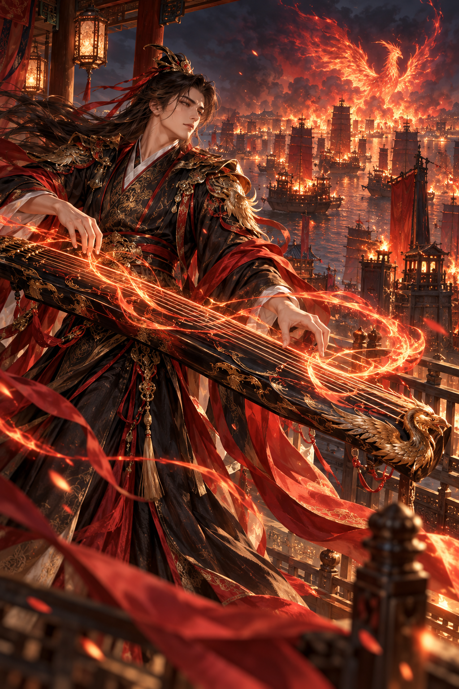
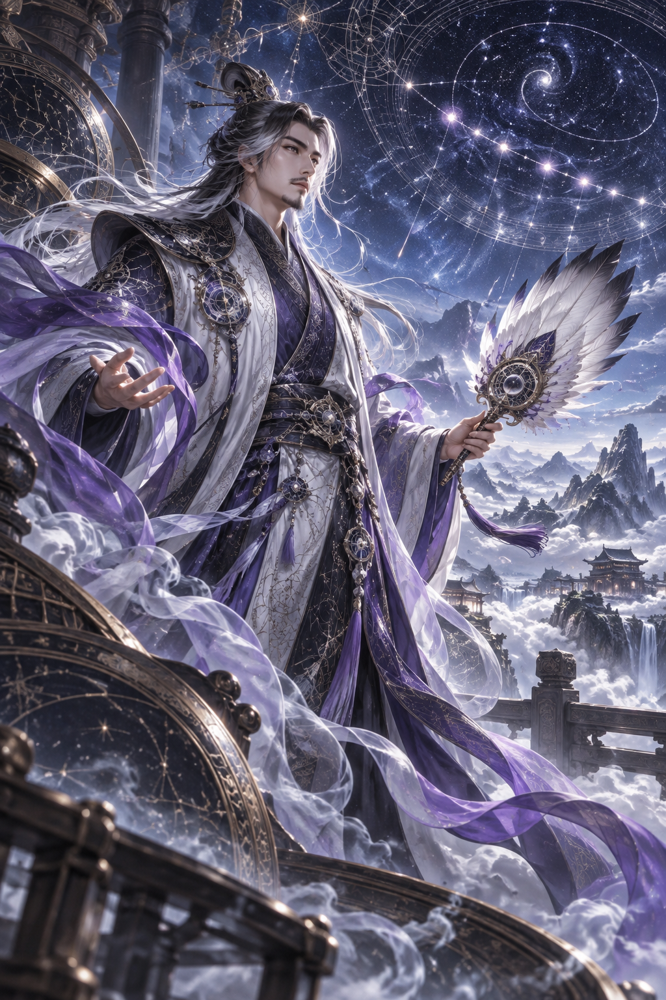
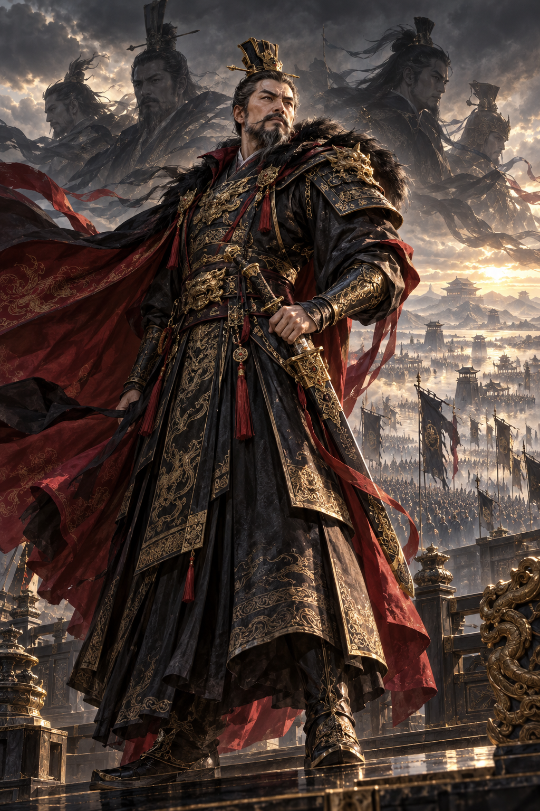
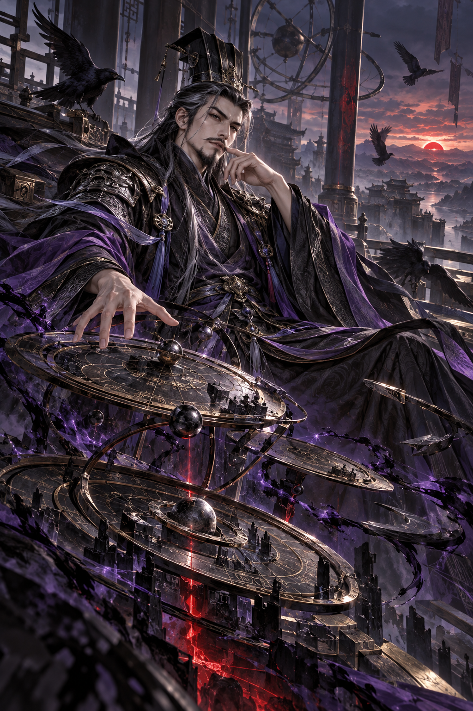

<!doctype html><meta charset="utf-8"><style>*{box-sizing:border-box}body{margin:0;background:#131015;color:#f1e7d8;font-family:Segoe UI,Microsoft YaHei,sans-serif}header{height:150px;padding:28px 60px}header span{color:#c39c65;letter-spacing:.2em;font-size:15px}header h1{margin:12px 0;font-size:44px}main{display:grid;grid-template-columns:repeat(4,1fr);gap:18px;padding:0 38px 38px}article{height:660px;background:#251e22;border:1px solid #74563b;overflow:hidden}article img{width:100%;height:580px;object-fit:cover;object-position:center 22%}article div{padding:9px 14px}b{display:block;font-size:22px}small{display:block;color:#baaa9c;font-size:13px}</style><header><span>T11 · ORIGINAL GOD ART REVIEW</span><h1>八神将立绘总览</h1></header><main><article><div><b>神关羽</b><small>青绿 · 忠义 · 武魂</small></div></article><article><div><b>神吕蒙</b><small>幽蓝 · 洞察 · 水墨</small></div></article><article><div><b>神周瑜</b><small>赤金 · 琴火 · 风雅</small></div></article><article><div><b>神诸葛亮</b><small>星蓝 · 天象 · 雾</small></div></article><article><div><b>神曹操</b><small>黑金 · 帝王 · 战魂</small></div></article><article><div><b>神吕布</b><small>赤黑 · 战神 · 戟</small></div></article><article><div><b>神赵云</b><small>银青 · 龙魂 · 速度</small></div></article><article><div><b>神司马懿</b><small>紫黑 · 权谋 · 时间</small></div></article></main>